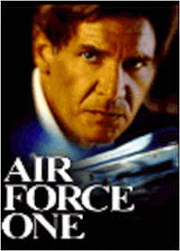
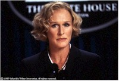
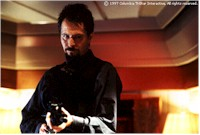

Contents | Features | Reviews | News | Archives | Store |
 |
|
| Movie Credits | Buy It! |
Air Force One
Review by Carrie
Gorringe
Posted 25 July 1997
|  | Directed by Wolfgang Petersen Starring Harrison Ford, Gary Oldman, Screenplay by Andrew W. Marlowe |
President James Marshall (Ford) is a chief executive for the troubled ‘90s; as a committed liberal, ex-Vietnam vet, and devoted family man, Marshall covers all of the mainstream bases with consummate skill (call him an uber-Clinton). Having lived up to all of these expectations, who can blame the President for simply wanting to lie back, relax and enjoy the pleasures of a football game on tape after a hard day of speechifying, in between cuddles with his wife (Crewson) and daughter (Matthews)? Instead, the Chief Executive finds himself engaged in combat with a group of ultra-nationalist Kazakhstan terrorists, led by Korshunov (Oldman), who have managed to make their way onto Air Force One. In good contradictory ideological fashion, Korshunov bears a remarkable resemblance to Lenin, but acts in the name of a Hitler-like figure named Alexander Radek (Prochnow). Radek is a genocidal general whose reign of terror was cut short by the efforts of a joint Russian-American task force put together by Marshall. Earlier in the day, Marshall had given an anti-terrorism speech in Moscow; by way of emphasis at a key point in this speech, his eyes narrowed and, taking an ominous pause, coldly stated that it was the terrorists’ turn "to be afraid." Now it is Marshall who has reason to be afraid, as Korshunov and friends have taken control of the plane and fifty hostages, including his wife and daughter. Korshunov’s terms are precise: either the U.S. Government must secure the release of General Radek, or Korshunov will have one hostage shot for every thirty minutes that Radek remains in jail. The task of negotiation falls to Vice President Bennett (Close), whose every move is mocked by Korshunov. She also has to contend with Stanton Dean (Stockwell), the Secretary of State, who claims to be "in charge here" (an obvious graduate of the Alexander Haig School of Constitutional Government) and who wants to take decisive action against the terrorists. Their options are limited by the number of security and defense safeguards built into Air Force One. Fortunately, through a ruse, Marshall remains on board, hidden, and proceeds to make life difficult for the terrorists.
 Several wags have suggested that Air Force One is a continuation of
director Petersen’s penchant for working in confined spaces – Das Boot
being the primary "evidence" to support this claim. Aside from the more
unmistakable evidence of other Petersen films such as Outbreak and In the Line
of Fire that present just as much suspense within a greater territorial range, the
wags’ point is, to some extent, persuasive; while keeping the central action confined
to one small area does inspire tension in the audience, there is a real danger of wringing
all of the tension out of a film, precisely because the confinement sharply limits the
number of narrative possibilities. As might be expected from his track record, Petersen
keeps the tension at a high pace throughout most of the film, sustaining it through tight
editing and Michael Ballhaus’ ambiguous, darkly metallic cinematography.
Several wags have suggested that Air Force One is a continuation of
director Petersen’s penchant for working in confined spaces – Das Boot
being the primary "evidence" to support this claim. Aside from the more
unmistakable evidence of other Petersen films such as Outbreak and In the Line
of Fire that present just as much suspense within a greater territorial range, the
wags’ point is, to some extent, persuasive; while keeping the central action confined
to one small area does inspire tension in the audience, there is a real danger of wringing
all of the tension out of a film, precisely because the confinement sharply limits the
number of narrative possibilities. As might be expected from his track record, Petersen
keeps the tension at a high pace throughout most of the film, sustaining it through tight
editing and Michael Ballhaus’ ambiguous, darkly metallic cinematography.
There are other aspects, however, that undermine the film far more insidiously. The premature unraveling of the film doesn’t occur until the last half hour, when the script requires Marshall to act in a manner contrary to the type of behavioral pattern one would expect from a Congressional Medal of Honor recipient and a former pilot; honor and duty come before family. Although Marshall is able to rectify the consequences of his actions (a situation not without its own suspense), the risk to the film’s credibility has been great. Since this occurs at the end of the film, Petersen just might be able to finesse his way through. Then there’s the issue of the staff member acting as "the enemy within"; his motivations for betrayal are never revealed, so it becomes difficult to understand just when he will act and why. His "loose cannon" status, strangely enough, isn’t very intriguing. And we really don’t even need to discuss the revolting way in which the characterization of Marshall’s wife and Vice-President have been developed; the yellow stripes down their backs are so strong as to be virtually fluorescent. Admittedly, a mother who is afraid for her daughter’s life and virtue is forgivable, but the specter of the usually strong Glenn Close, in pearls and a silk blouse, openly weeping over Marshall’s dilemma at the height of the hostage crisis, is simply, inexcusably, nauseatingly, infra dig; her role is nothing more than a horrible and untrue cliché about the perils of placing women in power; had Maggie Thatcher – another proponent of silk and that little strand of pearls – been in charge of this mission, she would have sent, without the slightest hesitation, several zillion Marines to soundly spank this naughty little terrorist and send him to prison for life without any supper. Why Marshall would have chosen this gutless wonder as his running mate is mystifying: either he has no stomach for strong women (not necessarily true, since his beloved daughter has the moxie to tell the terrorist exactly what she thinks of him) or she could carry some chief electoral-vote strongholds. No wonder Dean Stockwell’s power-hungry Secretary of State wants to enact a constitutionally-valid coup d’etat against this executive punching bag. Obviously, screenwriter Marlowe wants these weak characters to act as foils against the strongly-drawn profiles of Marshall and Korshunov, but the preponderance of extreme personalities in this film tends to degenerate into caricature too often.
Speaking of those tightly-drawn profiles, thank heaven for them. There’s no question that we’ve seen these minimal variations on a theme countless times: Ford as the resolute hero with just enough moral decency to prevent his character from falling into rigidity, and Oldman as the quietly chilling villain, complete with exotic accent. But they’re as comfortable as a pair of old shoes, and the gentlemen in question have so much fun putting them into operation, that the pleasure to be derived from watching two consummate masters of the stereotypical go at each other shouldn’t be denied. Undeniably, it’s a guilty pleasure, but at least it’s one of the few constants the film allows the audience to experience, so, why deny it?
One final note: For all of its eye-popping, sometimes credulity-straining special effects (courtesy of Richard Edlund), the really remarkable aspect of Air Force One lay in how similar the film was to one of those "suburban defense" films of the late ‘60s and early ‘70s, when a family had to defend itself against the onslaught of a hostile force, usually in the form of a Hell’s Angels splinter group, a bunch of drugged-out hippies, or devil worshipers. In the course of things, the son was killed, the mother or the daughter were subjected to the usual outrages, and then Dad (played by some strong silent type, such as Glenn Ford) would subdue the whole mess of troublemakers with the adept application of a pick-up truck and a double-barreled shotgun. The relationship of Air Force One to this genre is most blatantly suggested when Ford (Harrison, not Glenn) yells at one of the terrorists "Get off my plane!" before dispatching him to the netherworld’s equivalent of Patrice Lumumba University. Ford might as well have substituted "property" for "plane", because it is his domestic, as much as his executive, authority that is at stake. Air Force One, to its regret, tended once too often to forget that both were of equal importance.
Contents | Features | Reviews | News | Archives | Store
Copyright © 1999 by Nitrate Productions, Inc. All Rights Reserved.